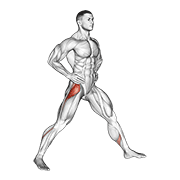
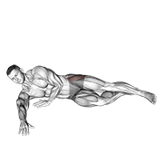

女性训练专项
训练前提：女性不是"缩小版的男性"
核心理念：女性不是"缩小版的男性"。训练方法要在理解女性生理特点的基础上适配，而不是把男性计划简单"减量"。依据：ACSM 女性运动指南、NSCA 女性运动员训练专章、月经周期与运动表现研究。
先看男女在运动中的本质差异（以男性为基准）：
| 对比项 | 男性 | 女性 |
|---|---|---|
| 肌肉量占比 | 35-45% | 25-35% |
| 体脂率正常范围 | 10-20% | 20-30% |
| 最大力量 | 基准 | 约 60-75% |
| 下肢力量 | 基准 | 约 70-80% |
| 上肢力量 | 基准 | 约 50-60% |
| 有氧耐力 | 基准 | 约 85-95% |
由此得到三条训练结论：
- ① 上肢差距最大（50-60%）：需要专门、系统的上肢训练——不是减量，是把缺的补上
- ② 下肢差距较小（70-80%）：步法与技术训练可以参照同等标准要求
- ③ 有氧耐力差距最小（85-95%）：体能训练不必减量，可以按同等强度安排
月经周期：会调，不是不能练
月经周期不是训练的阻碍，是可以利用的"生理节律"。以 28 天为例，周期分四个阶段，每个阶段的身体状态不同：
| 阶段（天数） | 身体状态 | 训练导向 |
|---|---|---|
| 月经期（第1-5天） | 雌激素、孕激素双低：能量最低、恢复最慢 | 降低强度：不做大力量与高强度间歇 |
| 卵泡期（第6-14天） | 雌激素上升：力量与爆发力达峰值、恢复最快 | 黄金窗口：安排最大强度与最大量 |
| 排卵期（第15-17天） | 雌激素峰值：韧带松弛度增加，ACL 损伤风险最高 | 强度可高，但落地与变向要格外控制 |
| 黄体期（第18-28天） | 孕激素上升：体温升高、耐力下降、恢复变慢 | 降量增恢复，延长热身时间 |
什么时候切换阶段？不是日历说了算，是身体说了算：
四阶段训练方案（28 天工作流）
阶段① 月经期（第1-5天）：低强度恢复
身体状态：能量最低、疲劳最强、恢复最差；出血量大的日子可能有轻微贫血。
原则："练可以，但不要冲。"强度降到平时的 60-70%，不做最大力量、高强度间歇与长时间剧烈跑动。
| 环节 | 内容与参数 | 时长 |
|---|---|---|
| 热身 | 慢跑 + 动态拉伸，降低强度，以身体感觉为准 | 15 分钟 |
| 技术 | 定点多球，不跑动只练手上：15 个/组 × 3 组，组间休息 90 秒 | 20 分钟 |
| 恢复 | 静态拉伸 + 呼吸训练 | 10-15 分钟 |
选项 B：完全休息。出血量大或明显不适时直接休息——休息也是训练的一部分，不必有负罪感；可以做轻度散步或瑜伽。
阶段② 卵泡期（第6-14天）：训练黄金窗口
身体状态：雌激素上升，力量与爆发力提升、恢复速度最快、体能水平上升。
原则：这是一个月中训练效率最高的 10 天，不要浪费。总时长 90-120 分钟，构成如下：
| 环节 | 内容与参数 | 时长 |
|---|---|---|
| 热身 | 动态拉伸 + 步法激活 + 少量冲刺 | 15 分钟 |
| 力量（最大力量窗口） | 深蹲 3 组 × 8 次（重量 80-85% 1RM）；弓步 3 组 × 8 次/侧；核心 3 组 × 15 次 | 30 分钟 |
| 技术（爆发力优先） | 杀球、杀上网、跳杀：20 个/组 × 4 组，组间休息 60 秒 | 30-45 分钟 |
| 体能 | 间歇跑：15 秒工作 + 15 秒休息 × 12 轮 | 15 分钟 |
阶段③ 排卵期（第15-17天）：高强度 + 防伤
最重要警示（ACSM 数据）：女性在排卵期前后 ACL 损伤的发生率约为黄体期的 3-4 倍——雌激素水平升高会使韧带松弛度增加。
身体状态：力量与爆发力仍在高位，但前交叉韧带损伤风险达到周期峰值。
原则：强度可以高，但变向与落地要格外控制。总时长 90 分钟：
| 环节 | 内容与参数 | 时长 |
|---|---|---|
| 热身（比平时多 5 分钟） | 落地控制：原地跳 → 落地保持 3 秒 × 10 次；侧向跳 × 10 次/侧；单腿落地、膝盖对准第二脚趾 × 10 次/侧 | 20 分钟 |
| 主体 | 高强度技术照练，但避免：极限变向、疲劳状态下的急停/变向、跳杀落地不稳后继续跑 | 50 分钟 |
| 体能 | 可做高强度间歇，但注意疲劳时的落地质量；落地姿势一变差立即停止 | 20 分钟 |
阶段④ 黄体期（第18-28天）：量降质不降
身体状态：孕激素上升，体温升高约 0.3-0.5℃，同等强度心率比平时高 5-10 bpm，恢复变慢；体重可能增加 1-2 kg，那是水分潴留，不是脂肪。
原则：不要和身体对抗。识别信号、适当减量，重点从"量"转向"技术质量"。总时长 60-75 分钟（比黄金窗口减少 25-30%）：
| 环节 | 内容与参数 | 时长 |
|---|---|---|
| 热身（延长） | 慢跑 5 分钟让身体慢慢进入状态，动态拉伸比平时多 1 组（体温调节需要更久） | 15 分钟 |
| 主体（技术质量优先） | 不做：大重量力量（最大力量下降约 5-10%）、长时间高强度间歇、极限体能对抗。做：技术细节训练、战术训练、中低强度有氧（心率 60-70% HRmax） | 40-50 分钟 |
| 整理 | 静态拉伸 + 筋膜放松——黄体期肌肉更容易紧张 | 15 分钟 |
ACL 损伤预防专项
前交叉韧带（ACL）损伤是女性最高发的羽毛球损伤，可以预防，必须预防。
数据：女性 ACL 损伤率约为男性的 4-6 倍（NSCA）；约 70% 的损伤发生在非接触情况下（落地/变向）；排卵期前后的发生率最高。
为什么女性更容易伤
- 解剖差异：骨盆更宽 → 股骨 Q 角更大 → 膝盖更容易内扣
- 激素影响：雌激素使韧带松弛
- 肌力激活模式：更依赖股四头肌发力，腘绳肌激活不足
- 落地模式：落地时膝盖更直、更内扣
预防专项训练（每周 2-3 次，每次约 10 分钟）
全年执行，排卵期前后是重点窗口。按固定顺序做：
常见误区澄清
| 误区 | 事实 |
|---|---|
| "生理期不能运动" | 大多数人在生理期可以轻度训练（强度 60-70%）；完全不运动反而可能加重痛经 |
| "女生训练量应是男生的 70%" | 下肢与技术训练不必减量，可参照同等标准；有氧耐力差距很小（85-95%），可按同等强度。需要专门调整的是上肢训练内容，不是整体减量 |
| "女生练力量会变壮" | 女性睾酮水平约为男性的 1/10-1/20，增肌速度远低于男性。力量训练不会让女性"变壮"，而是更强、更不容易受伤 |
| "月经不规律没关系" | 连续 3 个月以上不规律 + 训练表现下降，应就医排查——警惕女运动员三联征（能量摄入不足 + 月经紊乱 + 骨密度下降）信号 |
给教练：问，不要猜。"今天感觉怎么样？要不要调整？"同时观察异常信号——同样的训练突然变慢/变累、技术动作突然变形、注意力明显下降，出现就主动降量，不硬顶。
🛡️ 髋部激活与落地控制动图
臀中肌控制与落地缓冲是 ACL 预防的核心，建议训练前做 2 组、每组 10–15 次。



动图素材 © Gym visual — gymvisual.com（180×180，经 hasaneyldrm/exercises-dataset 再分发，保留署名）；来源与逐文件对照见 images/exercises/README.md。